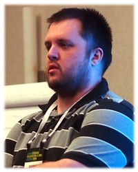

Memory-management testing
Sasha started by saying that he has been working with the KASan memory-error detection tool in an attempt to find places where the necessary locks are not being taken. But, to get there, he needs to be able to annotate which memory is protected by each lock, and he is not sure how to proceed. Adding that information inline, or in spin_lock_init(), doesn't seem like the best solution. Christoph Lameter suggested that the locking requirements could be put into the relevant structure definitions, but that could get messy; there were concerns about what that would do to the already convoluted struct page, for example.
The discussion moved on to VM_BUG_ON() calls, which cause an oops
when an assertion finds something wrong. A lot of these, he said, could be
relocated to, for example, where page flags are written. That would catch
problems at the source, rather than tripping over them at some later
point. The problem with that approach might be the performance cost, since
it would be adding checks at every write to the page flags. Kirill
Shutemov also worried about potential false positives; if flags are changed

One possible improvement might be to validate the page flags only when a page is unlocked. Sasha said he would put a proposal together and see what sort of response he gets.
He is also trying to improve testing of the handling of huge pages. To that end, he has written a patch to expose the list of huge pages to debugfs; that allows him to force page splits at inconvenient times to see what happens. He plans to clean that patch up and submit it soon.
The final topic of discussion was kernel trees for testing. Sasha said that Andrew Morton's "mmotm" tree contains changes that are thought to be suitable for the next merge window, but that is only so helpful to get testing for large memory-management patch sets, which often go through several iterations before reaching that point. So he is thinking about running a testing tree of his own containing patches from "known authors," in the hope of catching problems earlier. Would that be useful, he asked, and would others make use of it?
Andrew responded that it's often more useful if one person provides the
testing service, rather than putting out a tree in the hope that others
will test it. But he might consider pulling it into mmotm. Hugh
worried, though, that doing so might destabilize the mmotm tree. Sasha
responded that such destabilization was exactly the purpose — it would help
to bring out problems early. But whether such destabilization would be
welcome for mmotm users in general is not clear.
| Index entries for this article | |
|---|---|
| Kernel | Development tools/Testing |
| Conference | Storage, Filesystem, and Memory-Management Summit/2016 |